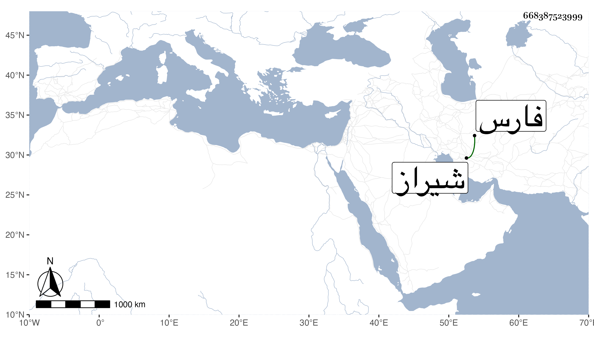

0902Sakhawi.DawLamic.ITO20230111-ara1.EIS1600.668387523999
Biography ID: 668387523999
884
اسكندر شاه بن أميرزة عمر شيخ بن تيمورلنك أخو محمد الآتي ملك شيراز من بلاد فارس بعد قتل أخيه في سنة اثنتي عشرة وثمانمائة وأحضر قاتل أخيه فعتبه فقال له ما علمت في حقك إلا خيرا فلولا قتلته ما وصلت للمملكة فبادر بقتله لئلا يقال أنه كان بدسيسة منه مع عدم ذلك وكان ذلك في سنة ثمان عشرة .
